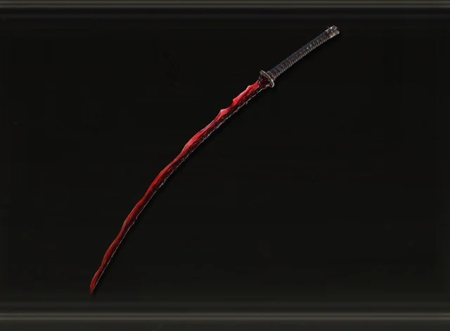
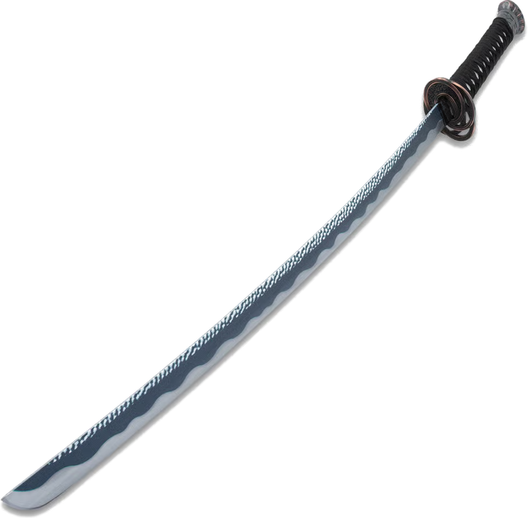
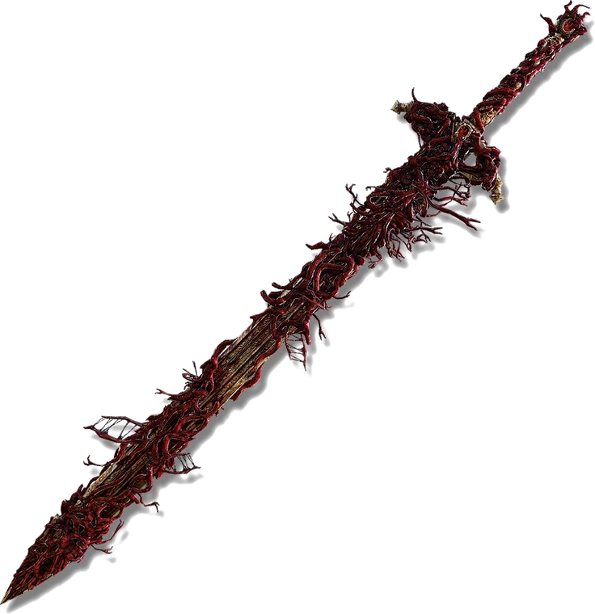
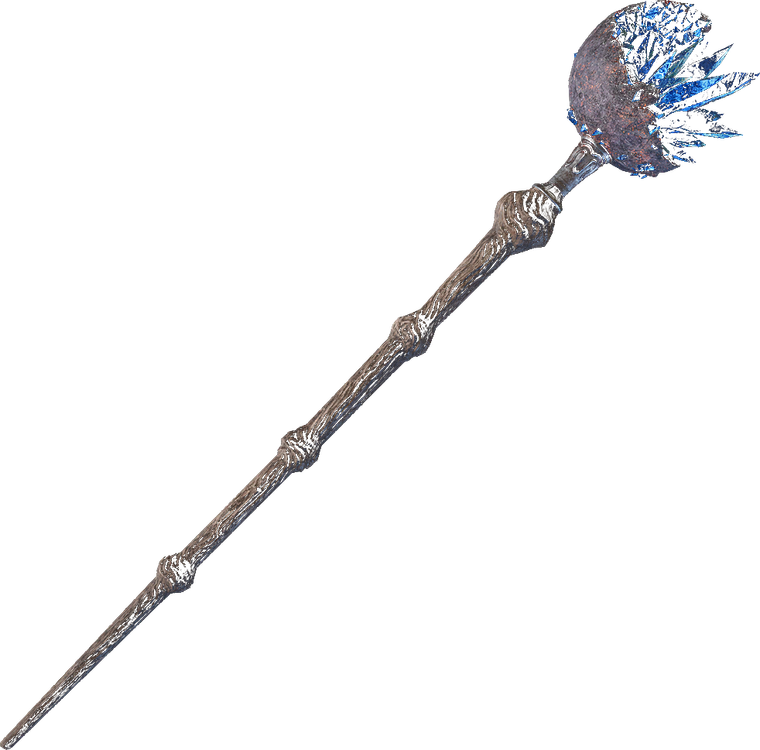
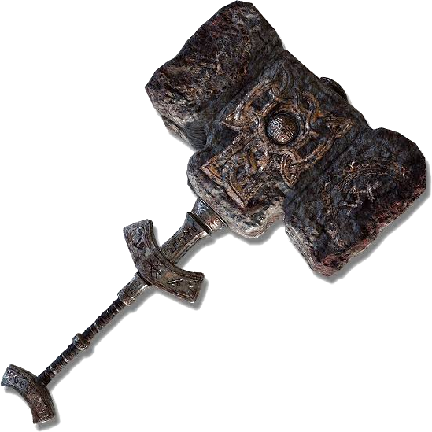
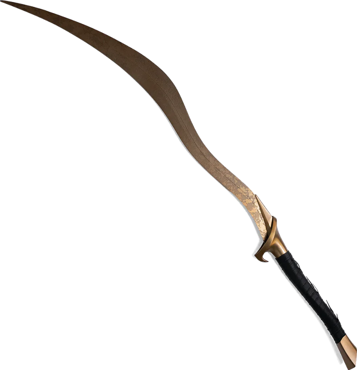

Pick Vagabond or Astrologer
Vagabond is the sturdiest melee start; Astrologer the safest ranged one. Classes only set starting stats. Nothing is locked forever, so don't agonise.
We chart the path from maidenless wanderer
to Elden Lord, and write it all down.
Boss routes, proven builds and honest guides
for those who walk the Lands Between.
Every Elden Lord was once lost in Limgrave. Six decisions in your first five hours matter more than the next fifty. Start here.
Vagabond is the sturdiest melee start; Astrologer the safest ranged one. Classes only set starting stats. Nothing is locked forever, so don't agonise.
An extra flask charge from minute one. Most other keepsakes are trinkets you'll find in the world anyway within a few hours.
The single most common new-player mistake is dying in two hits at 10 Vigor. Push it toward 25-30 before pouring points into damage stats.
Meet Melina at the third Site of Grace to receive your spectral steed. If something kills you fast, ride away; the open world rewards cowardice.
Smithing Stones at the blacksmith matter more than character levels. A +3 weapon at level 20 beats a +0 weapon at level 40 every time.
Runes lost are tuition paid. If a boss wall stops you, go somewhere else. Elden Ring is built so there is always another direction to grow strong in.
The critical path through the Lands Between, in the order most Tarnished should walk it. Optional gods are marked in gold.
The skill check. Buy Margit's Shackle from Patches to pin him twice, and learn his delayed swings. The whole game speaks this language.
Summon Nepheli by the fog gate. Phase two trades speed for fire. Stay on his left leg, away from the dragon arm.
Phase one is a puzzle: strike the singing students with golden auras. Phase two is a duel. Strafe her moon sorceries and punish summons.
The festival lets you re-summon allies endlessly. Keep golden signs alive while you chip. Mount Torrent to dodge the meteor re-entry.
Buy the Purifying Crystal Tear to nullify his Nihil ritual. Required gatekeeper for the Shadow of the Erdtree DLC.
Margit's true form, twice as fast. His holy blades vanish on a delay. Dodge the shimmer, not the swing. Melina can be summoned here.
A fight against geography. Stay glued to his left ankle in phase one; in phase two, use Torrent and sprint through the fire prayers.
The hardest fight in the game. She heals on every hit, even blocked ones. Learn to run out of Waterfowl Dance's first flurry, or save a Freezing Pot for it.
Blasphemous Claw parries his glowing attacks in phase two. Destined Death shreds max HP. Greed kills more Tarnished here than his blade does.
Phase two he throws the axe away and becomes Hoarah Loux, wrestler of gods. Respect the grabs; they cannot be blocked, only dodged.
Two bosses, one flask pool. Budget your healing across the Radagon half. Radagon fears physical damage; the Elden Beast fears patience and stamina management.
Six proven archetypes, from first playthrough to NG+7. Stats shown are the soft-cap targets around level 125-150.

Blood loss ignores boss defence scaling. Corpse Piler spam melts everything that bleeds, which is nearly everything.

Transient Moonlight staggers, pokes safely from range, and scales all game. Available early from Gael Tunnel in Caelid.

Taker's Flames deals huge fire damage and heals you on every hit and kill. The most forgiving endgame weapon in the game.

With the Cerulean Hidden Tear, one uninterrupted beam deletes entire boss health bars. Glass cannon. Vigor is still not optional.

Jump attacks posture-break bosses in two hits. Slow, honest, devastating: the classic FromSoftware power fantasy.

Grab it from an evergaol fifteen minutes into the game and it carries to the credits. Built-in bleed and a backflip Ash of War.
Hand-picked from the community's best teachers. Click a frame to load the video.
Dispatches from the Lands Between: what changed, and what it means for your build.
A round of bug fixes and balance adjustments across base game and DLC weapons. Perfumer builds and several Shadow of the Erdtree armaments were touched, so check your Ash of War damage before your next boss run.
The Promised Consort Radahn fight received readability and balance changes, and dozens of underused weapons were buffed. Several fringe builds became genuinely viable overnight.
The colossal expansion opens the Land of Shadow: over two dozen new bosses, eight new weapon categories, and the Scadutree Blessing system that levels you inside the DLC. Defeat Mohg and Radahn to enter.
Separate PvP scaling arrived: raw attack power up, weapon-skill damage down in duels. The colosseums settled into the healthiest meta the game has had.
For the full official notes, see Bandai Namco's Elden Ring hub.